Simulado 1
No meio do caminho
Para medir onde você está e ajustar o estudo enquanto ainda dá tempo.
30 dias após a compra
Material independente, sem vínculo com a Prefeitura do Salvador.

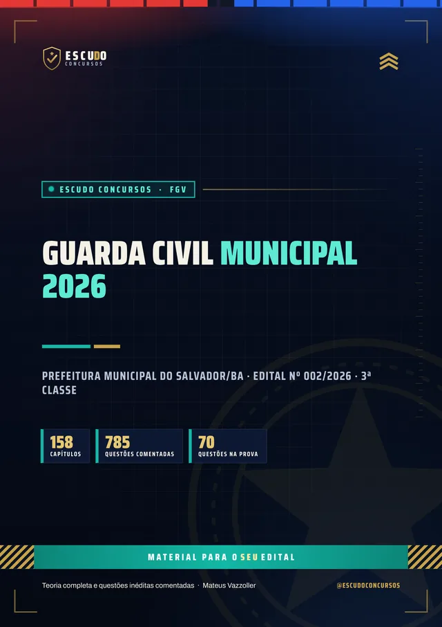
785questões
comentadas
ConcursoGCM Salvador/BA2026 · 3ª Classe
Briefing
São 50 vagas para Guarda Civil Municipal de Salvador e uma prova da FGV com nota mínima em cada módulo. O seu material cobre o edital inteiro? Curso feito a partir do Edital nº 002/2026, item por item, com questões de 5 alternativas no formato FGV e gabarito comentado.
De acordo com o Edital nº 002/2026 · FGV
de R$ 47 por 21% OFF
R$37
com o cupom SALVADOR37 até 30/11/2026. Pelo botão, o cupom já vai preenchido.
R$47
Curso completo, com acesso imediato.
Terreno
O concurso
O concurso da Prefeitura Municipal do Salvador abriu 50 vagas para Guarda Civil Municipal, 3ª Classe, mais cadastro de reserva, com remuneração de R$ 3.546,42 e exigência de ensino médio completo. A prova objetiva da FGV é em 17 de janeiro de 2027, das 8h às 12h30: 70 questões de 5 alternativas (A a E), de 1 ponto cada, divididas em dois módulos.
Para seguir no concurso, é preciso acertar pelo menos 14 questões no Módulo I, 21 no Módulo II e 35 no total. Quem gabarita o Módulo II e fica abaixo de 14 no Módulo I é eliminado.
| Disciplina | Questões | Pontos |
|---|---|---|
| Língua Portuguesa (Módulo I) | 10 | 10 |
| Raciocínio Lógico-Matemático (Módulo I) | 10 | 10 |
| Informática (Módulo I) | 8 | 8 |
| Noções de Direito Constitucional e Direito Civil | 10 | 10 |
| Noções de Direito Penal e Processual Penal | 7 | 7 |
| Noções de Administração e Políticas Públicas | 5 | 5 |
| Conhecimentos na Área de Atuação | 10 | 10 |
| Legislação | 10 | 10 |
| Mínimo de 14 no Módulo I, 21 no Módulo II e 35 no total. | 70 | 70 |
Protocolo
O formato
Você estuda lendo, no seu ritmo, pela área de membros da Hotmart ou com os arquivos baixados. O curso foi feito a partir do Edital nº 002/2026, item por item, na ordem do conteúdo programático do Anexo I, com a legislação federal e as leis de Salvador conferidas no texto oficial vigente na data do edital.
Reconhecimento
Páginas reais do PDF
Toque numa página para ver em tamanho maior.
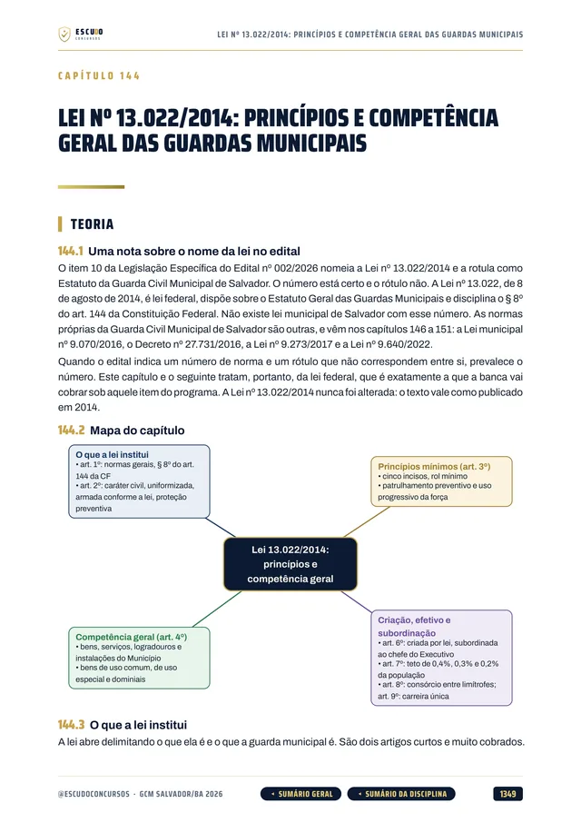
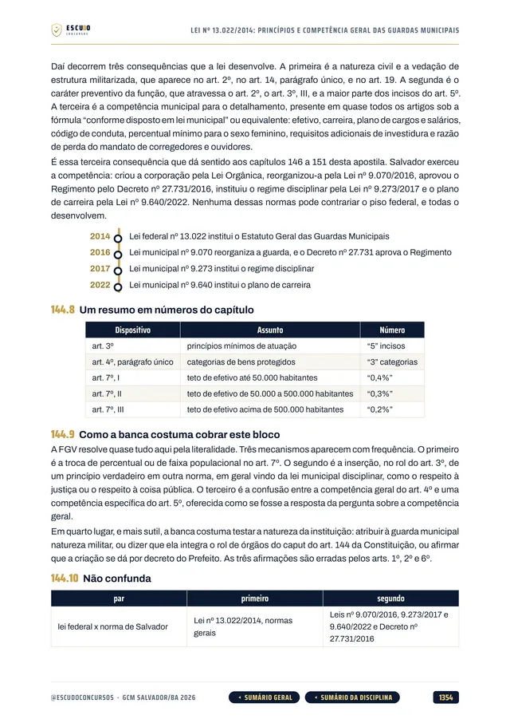
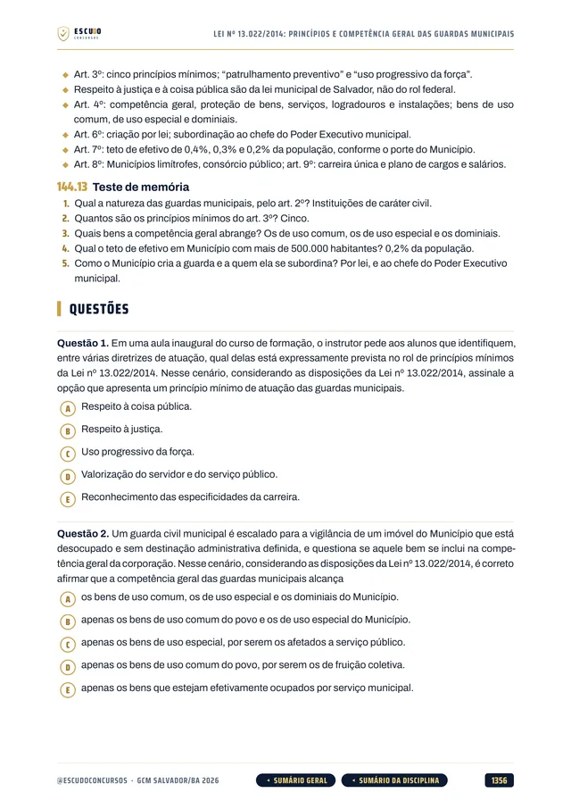
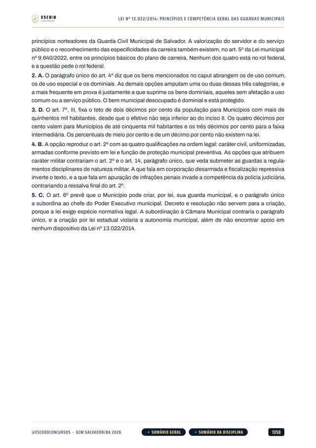
100% em PDF · Garantia de 7 dias · Pagamento pela Hotmart
Leia uma amostra grátis: a apresentação e 10 questões comentadas
Equipamento
O que você recebe
Curso em PDF organizado em módulos pelas disciplinas do edital, com 1.529 páginas no padrão visual ESCUDO, para ler no computador, no tablet, no celular ou no app da Hotmart. Não há videoaulas.
158 capítulos cobrindo as oito disciplinas da prova: Língua Portuguesa, Raciocínio Lógico-Matemático, Informática, Direito Constitucional e Civil, Direito Penal e Processual Penal, Administração e Políticas Públicas, Conhecimentos na Área de Atuação e Legislação.
785 questões inéditas com 5 alternativas (A a E), no formato da FGV, todas com gabarito comentado.
Conhecimentos na Área de Atuação em 18 capítulos: relações humanas e atendimento, defesa pessoal e uso da força, riscos e gestão da informação, proteção e escoltas, segurança física e patrimonial, incidentes críticos e negociação, prevenção e combate a incêndio e condutas do socorrista.
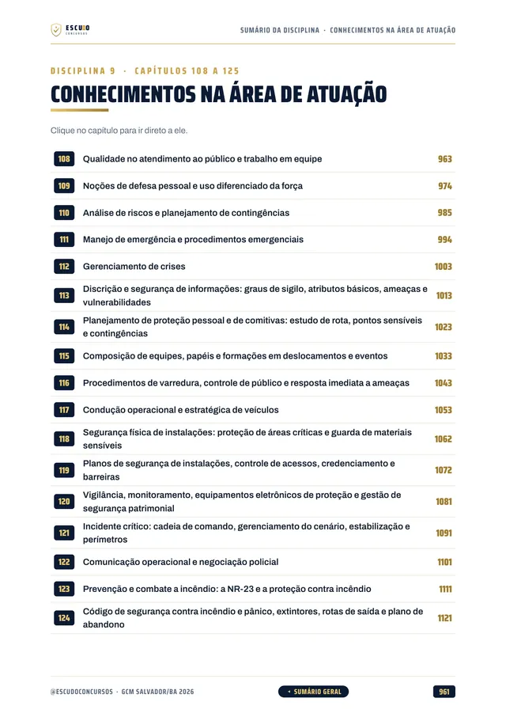
Legislação de Salvador em 15 capítulos, junto com a Lei 13.022/2014: Lei Orgânica do Município, Estatuto dos Servidores (LC 1/1991), carreira da Guarda (Lei 9.640/2022), regime disciplinar (Lei 9.273/2017) e regimento da Guarda Civil Municipal (Decreto 27.731/2016).
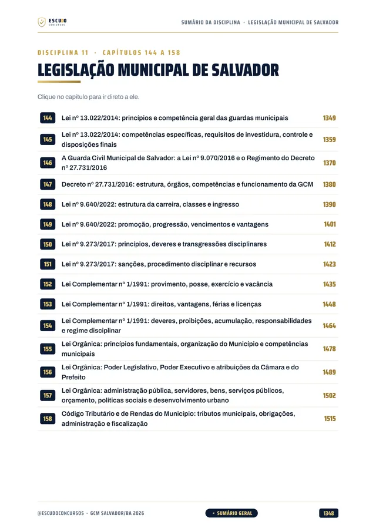
Legislação geral em 18 capítulos: Maria da Penha, Lei de Drogas, crimes raciais, ECA, CTB, Estatuto do Desarmamento, Abuso de Autoridade, licitações e crimes hediondos.
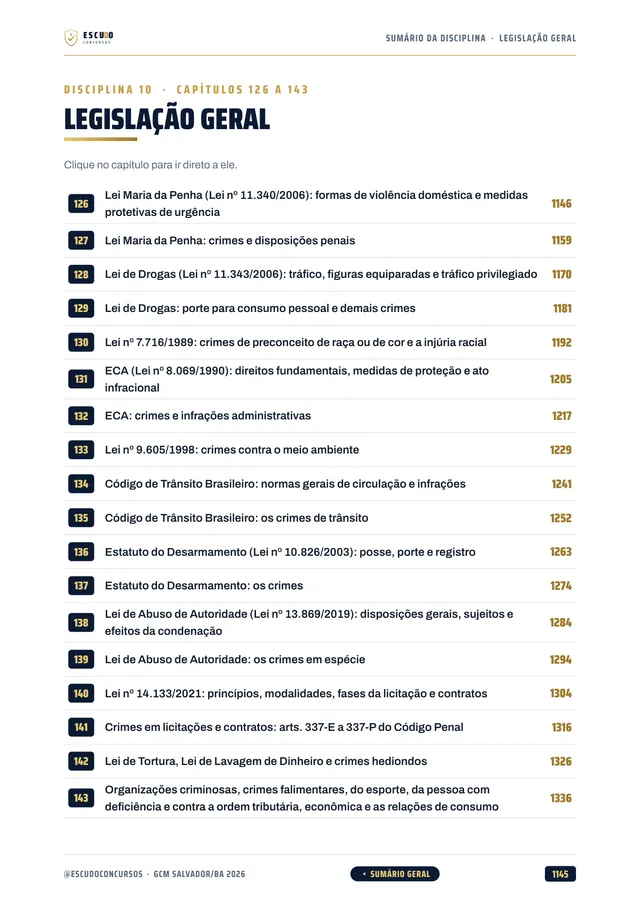
Teoria com recursos para memorizar: mapa de cada capítulo, esquemas, fluxogramas, mnemônicos, quadros de "não confunda", questão comentada passo a passo, revisão relâmpago e teste de memória.
Navegação clicável: do sumário você vai direto à disciplina e ao capítulo, e volta pelos botões do rodapé.
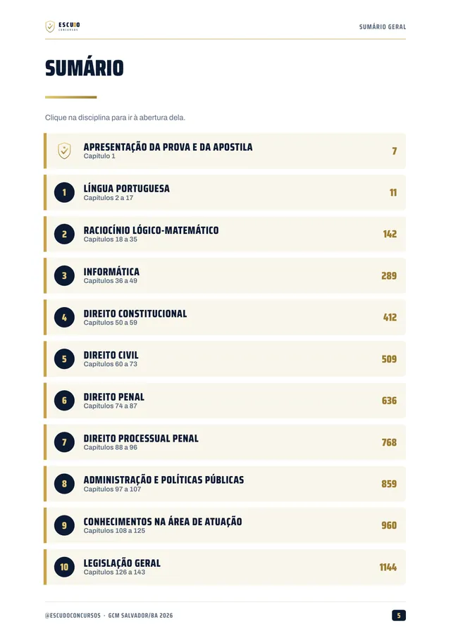
2 simulados inéditos no formato exato da prova (70 questões de 5 alternativas), cada um com caderno de comentários. O Simulado 2 é liberado na semana da prova, para o seu último teste.
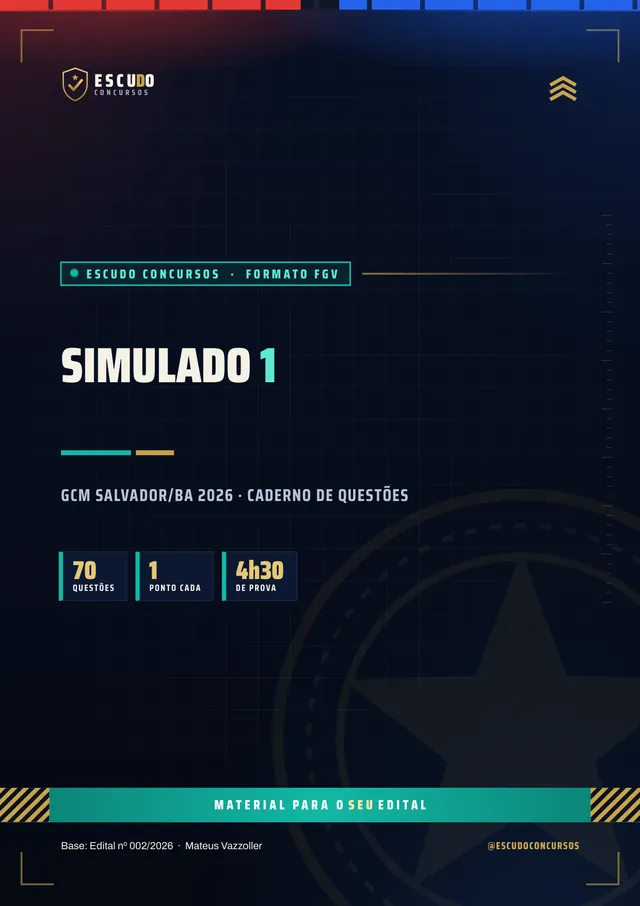
Plano de ação
Área de membros
| Módulo | Conteúdo | Liberação |
|---|---|---|
| M0 Comece aqui | Apresentação + capítulo 001 (como é a prova e como usar o curso). Bônus: PDF completo para baixar e imprimir | Na compra; o PDF completo no 8º dia |
| M1 Língua Portuguesa | Capítulos 002 a 017 | Na compra |
| M2 Raciocínio Lógico-Matemático | Capítulos 018 a 035 | Na compra |
| M3 Informática | Capítulos 036 a 049 | Na compra |
| M4 Direito Constitucional | Capítulos 050 a 059 | Na compra |
| M5 Direito Civil | Capítulos 060 a 073 | Na compra |
| M6 Direito Penal | Capítulos 074 a 087 | Na compra |
| M7 Direito Processual Penal | Capítulos 088 a 096 | Na compra |
| M8 Administração e Políticas Públicas | Capítulos 097 a 107 | Na compra |
| M9 Conhecimentos na Área de Atuação | Capítulos 108 a 125 | Na compra |
| M10 Legislação Geral | Capítulos 126 a 143 | Na compra |
| M11 Legislação Municipal de Salvador | Capítulos 144 a 158 | Na compra |
| M12 Simulado 1 | 70 questões, caderno de comentários | 30 dias após a compra |
| M13 Simulado 2 | 70 questões, caderno de comentários | 10/01/2027 (7 dias antes da prova) |
Treinamento
Treino no formato da prova
Cada simulado tem 70 questões de 5 alternativas, na ordem e na distribuição da prova, com caderno de comentários.
Simulado 1
Para medir onde você está e ajustar o estudo enquanto ainda dá tempo.
30 dias após a compra
Simulado 2
Liberado na semana da prova, uma semana antes do dia 17/01/2027.
10/01/2027
Perfil
Para quem é
Para quem vai prestar Guarda Civil Municipal de Salvador/BA em 17/01/2027 e quer estudar pelo programa do edital, sem perder tempo com assunto que não cai.
Proteção
Você tem 7 dias de garantia pela Hotmart. Se não for o que você esperava, pede o reembolso pela própria Hotmart, dentro do prazo.
Cronograma
Sem surpresa na área de membros
Na compra: todas as disciplinas em PDF, uma por módulo, com a teoria e as questões comentadas. É o curso inteiro, para começar a estudar no mesmo dia.
8 dias após a compra: o PDF completo para imprimir. É o mesmo conteúdo dos módulos num arquivo só, liberado depois da garantia de 7 dias.
Simulado 1: 30 dias após a compra, para medir onde você está no meio da preparação.
Simulado 2: em 10/01/2027, 7 dias antes da prova, para o último teste.
O PDF completo e os simulados aparecem bloqueados na área de membros até a data de cada um: não é conteúdo faltando, é a liberação programada.
Instrução
Dúvidas
Não. É um curso 100% em PDF: teoria, questões comentadas e simulados para ler e resolver.
O acesso é imediato depois da confirmação do pagamento, pela área de membros da Hotmart (web ou app). O PDF completo para baixar e imprimir é liberado no 8º dia.
O Simulado 1 é liberado 30 dias após a compra. O Simulado 2 é liberado em 10/01/2027, uma semana antes da prova.
Sim. A Legislação traz a Lei Orgânica do Município do Salvador, o Estatuto dos Servidores (LC 1/1991), a carreira da Guarda Civil Municipal (Lei 9.640/2022), o regime disciplinar (Lei 9.273/2017) e o regimento da Guarda (Decreto 27.731/2016), além da Lei 13.022/2014.
Não. A prova da FGV neste concurso tem questões de múltipla escolha com cinco alternativas, de (A) a (E), e uma só correta. As questões do curso seguem esse formato.
Não. As 785 questões de treino e as dos simulados são inéditas, escritas no formato do edital a partir do conteúdo programático.
Você tem 7 dias de garantia pela Hotmart. Se não for o que você esperava, pede o reembolso.
Missão
GCM Salvador/BA 2026
de R$ 47 por 21% OFF
R$37
com o cupom SALVADOR37 até 30/11/2026.
R$47
Curso completo, com acesso imediato.
Material para o SEU edital. ESCUDO Concursos.
Continue estudando
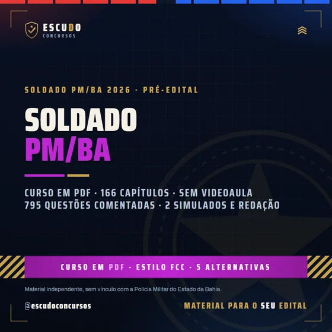
PM/BA 2026 · Pré-editalSoldado da Polícia Militar da Bahia PM/SC 2026 · Instituto AOCPSoldado da Polícia Militar de Santa Catarina
PM/SC 2026 · Instituto AOCPSoldado da Polícia Militar de Santa Catarina GCM Santana/AP 2026 · IDCAPGuarda Civil Municipal de Santana/AP
GCM Santana/AP 2026 · IDCAPGuarda Civil Municipal de Santana/AP PM/AL 2026 · CebraspeSoldado da PM de Alagoas
PM/AL 2026 · CebraspeSoldado da PM de AlagoasGuia do concurso: edital, vagas e o que cai · Ver todos: Guarda Municipal · Concursos na Bahia